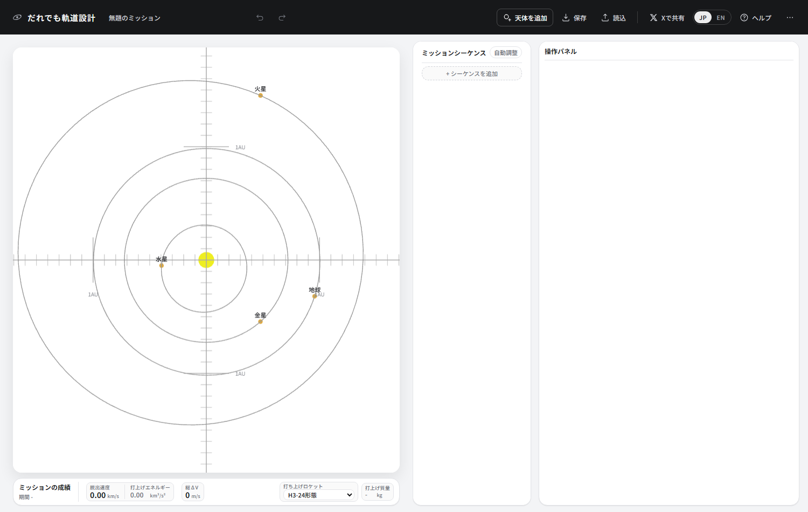
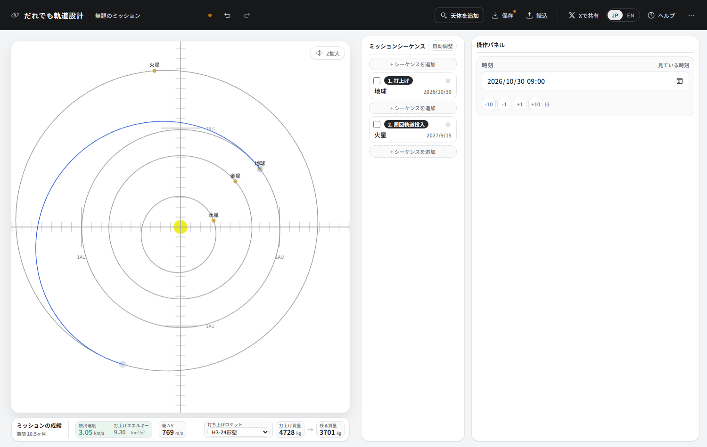
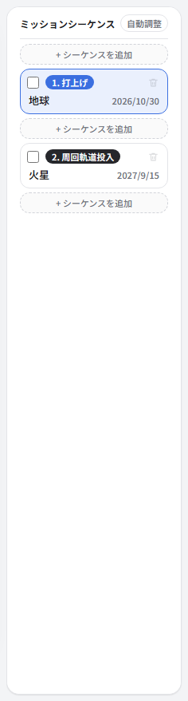
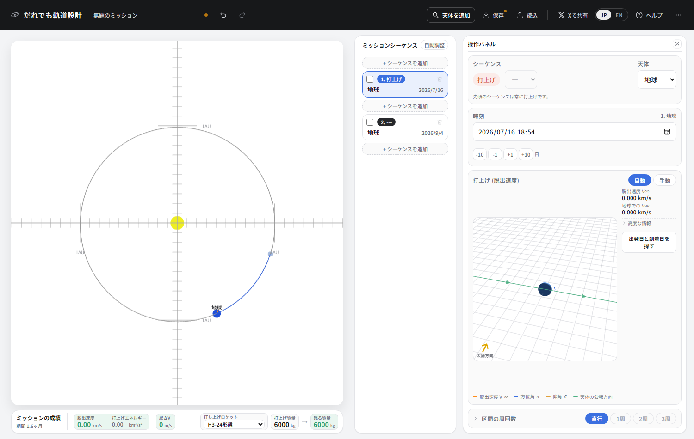
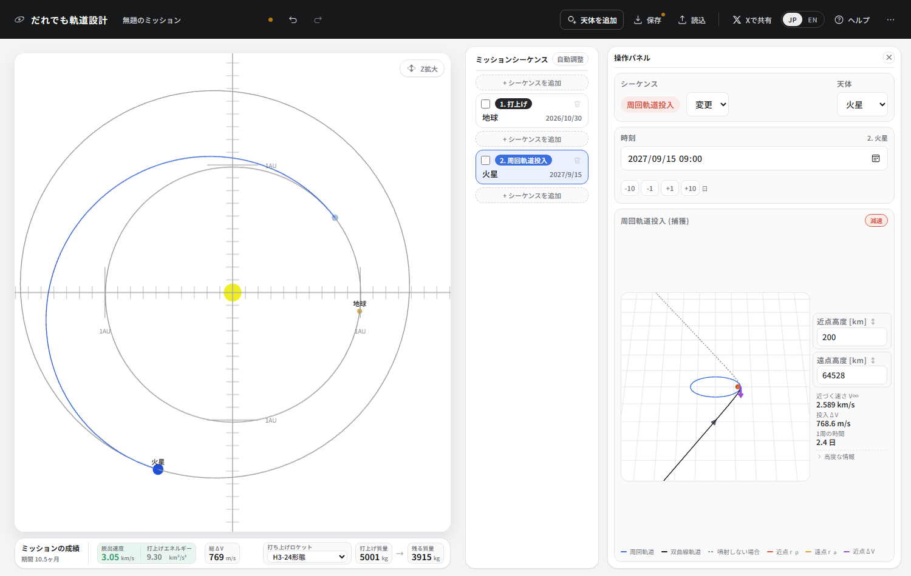
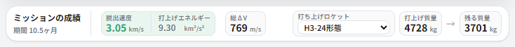
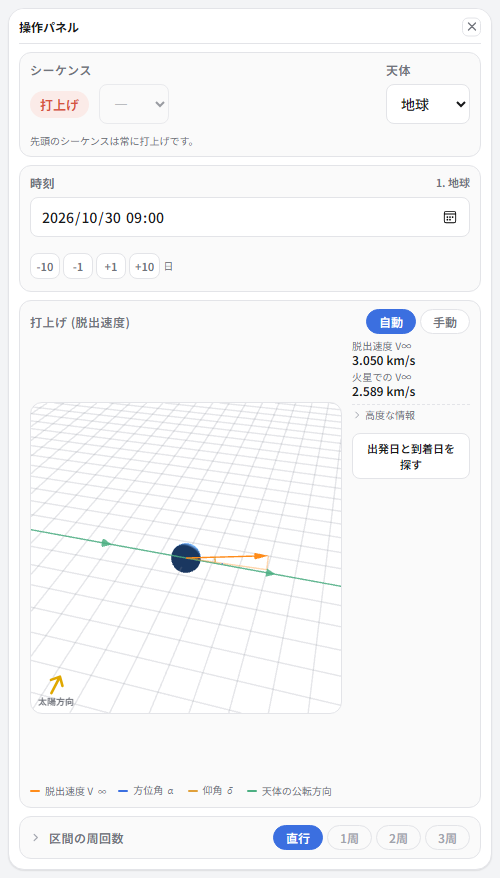

画面の見方
地球から火星まで、1本の軌道を引いてみます。5分もかかりません。
ここで覚えること
- ミッションは「シーケンス」を並べて作る
- 日付を決めると軌道が決まる
- 成績は左下のバーで読む
3つの区画

太陽系ビューは、いま何がどこにあるかを見る場所です。 ドラッグで回転、ホイールで拡大縮小できます。 何も選んでいないときは、ここに出ている時刻はプレビューです。 ← → を押すと日付が動いて、惑星がぐるぐる回ります。 この状態でいくら動かしても、ミッションの日付は変わりません。

ミッションシーケンスは、探査機がこれから何をするかの一覧です。 「打上げ」「スイングバイ」「周回軌道投入」といった節を上から順に並べていきます。

操作パネルには、一覧で選んだ節の設定と読み取りが出ます。 選んでいる節によって中身がまるごと入れ替わります。
火星まで引いてみる
-
「+ シーケンスを追加」を2回押します。1つ目は必ず打上げになります。

2つ目はまだ「---」= 行き先も種別も決まっていない状態です。 -
2つ目のカードを押して選び、操作パネルの天体で「火星」を選びます。 続けてシーケンスの「変更」から「周回軌道投入」を選びます。
種別の選択肢は天体によって変わります。惑星ならスイングバイ・周回軌道投入・大気圏突入、 小惑星ならフライバイ・ランデブーです。重力の大きさが違うので、できることも違います。
-
日付を入れます。カードを選ぶと操作パネルの時刻にその節の日付が出るので、 打上げを 2026/10/30、火星到着を 2027/09/15 にします。
日付欄に直接打ち込むほか、-10 -1 +1 +10 のボタン、 キーボードの ← →、太陽系ビューで惑星を掴んでドラッグ、のどれでも動かせます。

青い線が探査機の通り道です。日付を決めた瞬間に、それを結ぶ軌道が計算されます。
成績を読む

| 読み値 | 意味 | 大きいと |
|---|---|---|
| 脱出速度 | 地球の重力を振り切った後に残る速度 | 遠くへ早く行けるが、打ち上げられる質量が減る |
| 総ΔV | 探査機が自分の燃料で出す速度変化の合計 | 燃料を食うので、残る質量が減る |
| 打上げ質量 → 残る質量 | 選んだロケットで打ち上げられる質量と、燃料を使い切った後に残る質量 | 残る質量が大きいほど良い設計 |
色が付きます。青緑なら楽、黄色やオレンジなら苦しい、赤ならかなり苦しい、という目安です。 カーソルを乗せると、その色の境目がいくつなのかも読めます。
操作パネルの読み取り

右側の細い欄に読み取りが並びます。ここには設計を決めるのに要る数字だけを出していて、 確かめるときにしか使わないものは「高度な情報」に畳んであります。押すと開きます。
「火星での V∞」は、この区間を飛んだ先で火星に着くときの、火星から見た速さです。 これから作る軌道の善し悪しは、たいていこの数字で決まります。
覚えておくと早い
| ↑ ↓ | シーケンスを選ぶ |
| ← → | 時刻を1日ずつ動かす (Shift で10日) |
| A / Delete | シーケンスを足す / 消す |
| Ctrl+Z | 元に戻す |
| ? | キーボード操作の一覧 |
作った設計は、上のバーの「保存」でファイルに落とせます。 「…」のメニューから「共有リンクをコピー」を選ぶと、設計をまるごと埋め込んだURLが作れるので、 そのまま人に送れます。「画像で保存」は軌道図と成績を1枚の絵にします。